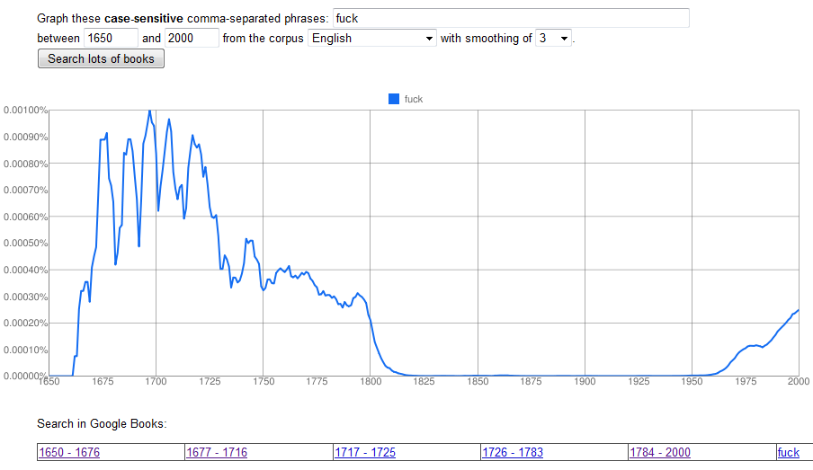
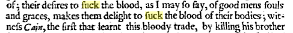
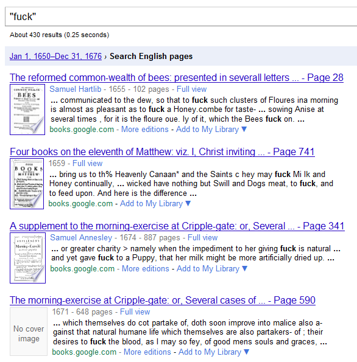

A sample of the OCR-derived text for “The Raven” in the CA Lewisburg Chronicle. From Ryan Cordell's article"Q i-jtb the Raven".
OCR errors matter


fuck

OCR errors matter
Letter б (b) for the digit 6 (six)
Letter o for the digit 0 (zero)
Letter з (z) for the digit 3 (three)
Frequently confused в (v) and б (b).
Very frequently confused и, н, and п. Some of these could be corrected through global search and replace operations (e.g., of those three letters, only и can stand alone as a word, only н occurs before а in a two-letter word) or global search with verification before replacement (e.g., in word-initial position before о, п is overwhelmingly the most likely, н is possible, and и is impossible).
Mistook м for iл. This was easily corrected with a global search and replace operation.
Inconsistently recognized ы, often making it ьi.
(David Birnbaum, OCR report for Bdinski Sbornik)
New OCR report
1. Improve statistical analyses (tools for training and adapting post-OCR correction models; look at impact on error rates on common text mining methods)
2. Formulate standards for annotation & evaluation of document layout
3. Use existing digital editions for training & test data
New OCR report
...
6. Train & test OCR on linguistically diverse texts.
7. Convene OCR institutes in critical research areas.